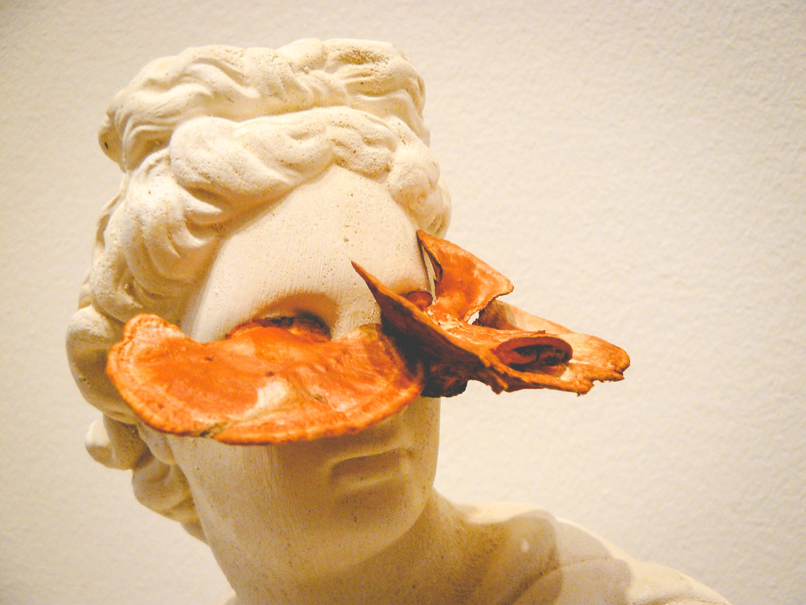
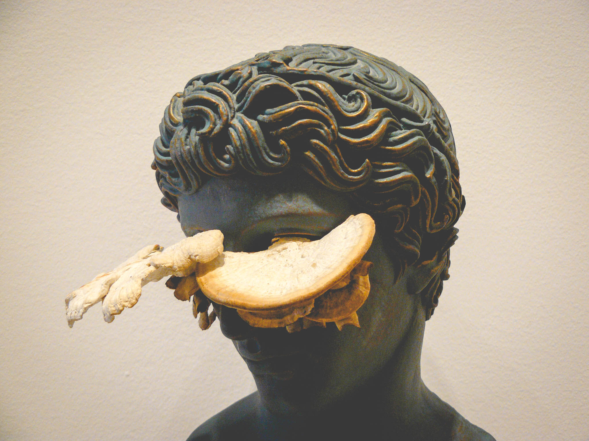
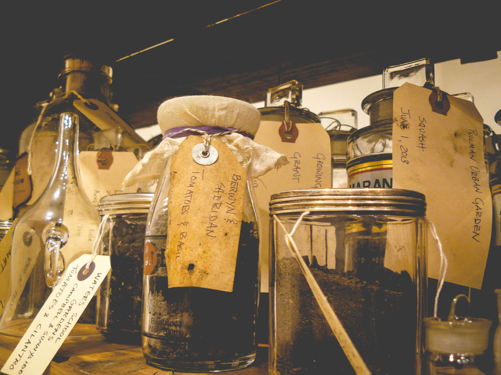
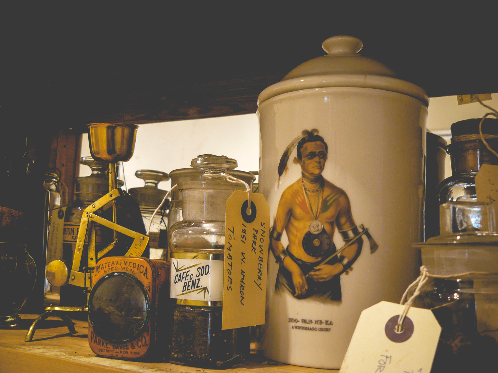
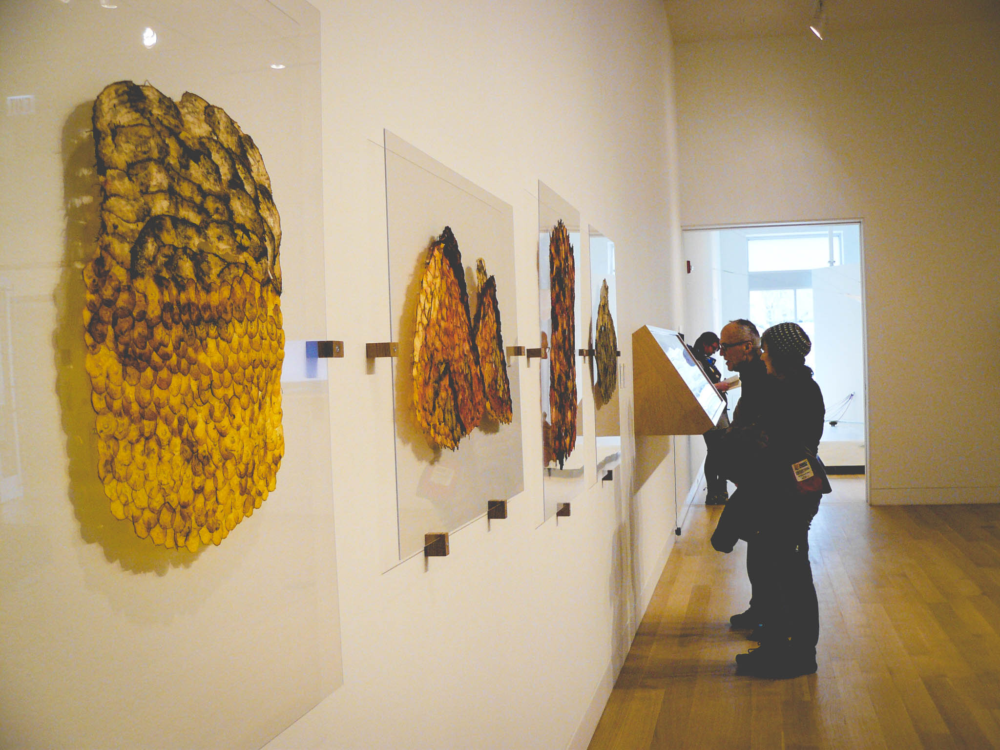
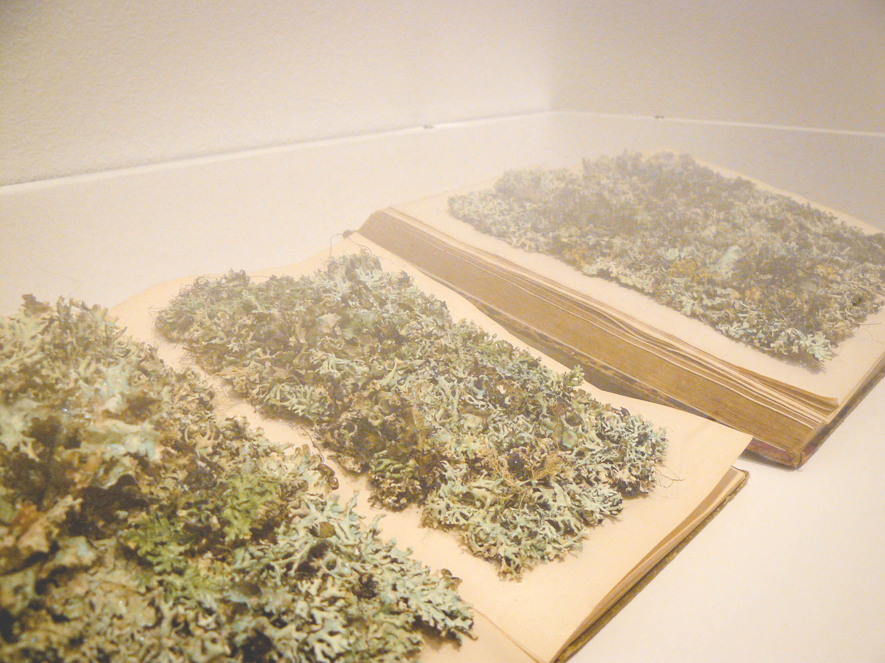

Rooted in Soil draws from the fields of visual art and environmental science to promote deeper understanding of the life-sustainging ecosystem that lies beaneath our feet. Soil, sometimes referred to as the “skin of the Earth,” is a resource we are intricately linked to, yet for the most part, are profoundly unaware of and disconnected from. This exhibition brings together installations, paintings, photographs, and video by fifteen artists who explore our connection to this living biosphere.
Through metaphor and analogy, acute observations of natural states, or by incorporating biological science into their work, these are artists that bring focus to our relationship to the land, often with soil itself becoming subject and material. The artists included in this exhibition view soil from distinct perspectives and while they understand its importance and vulnerability, they also perceive its mystery, beauty, and terror.
On one level, this exhibition provides a means to grasp the primal importance of soil and our responsibility for its stewardship. Ideally, we hope that it will encourage visitors to become advocates for the environment. At a deeper level, however, this exhibition has the potential to elucidate our place in the natural order, to see our own lives in a much broader context as part of the cycling and recycling of matter.
Artists include: Jane Fulton Alt, Vaughn Bell, Edward Burtynsky, John Gerrard, Julia Goodman, Jenny Kendler, Jae Rhim Lee, Sally Mann, Vik Muniz, Claire Pentecost, Justin Rang, Arthur Rothstein, Linda Swanson, Sam Taylor-Johnson, and Adriaen van Utrecht.
Rooted in Soil is on display at the Depaul Art Museum from January 29 – April 26, 2015.
New Ways to See by Jenny Kendler, 2013-2015. Vintage composite marble and wood busts, glue, archivally-preserved lichen.
New Ways to See by Jenny Kendler
New Ways to See by Jenny Kendler, 2013-2015. Vintage composite marble and wood busts, glue, archivally-preserved lichen.
Our Bodies, Our Soils by Claire Pentecost, 2014-2015. Soil samples from around Chicago, glass bottles.
Our Bodies, Our Soils by Claire Pentecost
Root of Scarcity V, Red Mountain I, Gnomon I, Root of Scarcity VI by Jenny Goodman, 2014. Beet papyrus.
New Kinds of Words by Jenny Kendler, 2015. Vintage book, archivally-preserved lichen, pearlescent pigments, bookbinding glue.